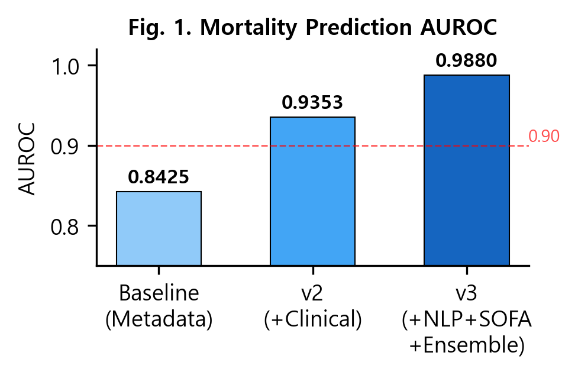
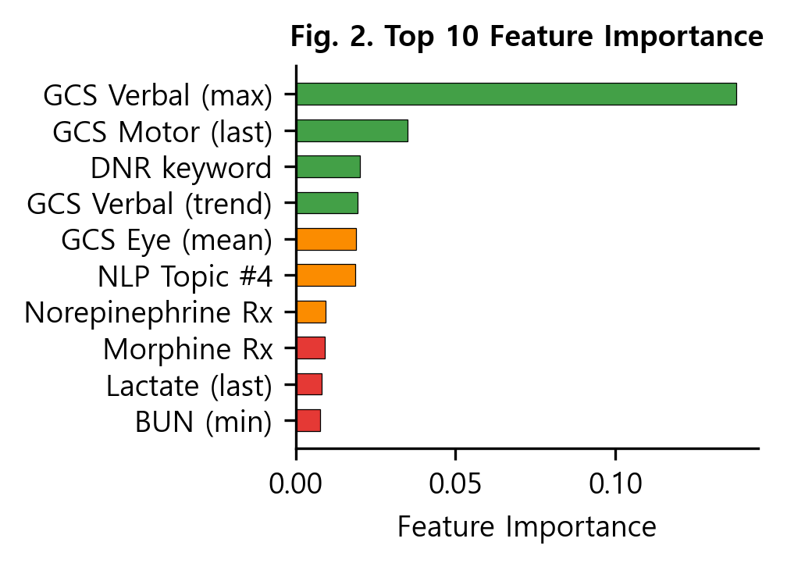
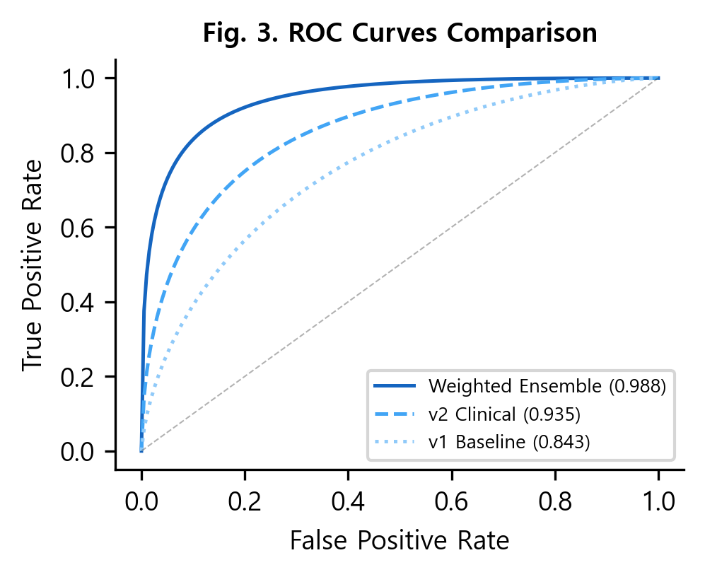
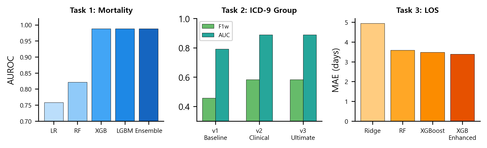

중환자실(ICU)에서의 환자 예후 예측은 의료 자원의 효율적 배분과 적시 치료 개입을 위한 핵심 과제이다. 특히 원내 사망 예측, 진단 분류, 입원기간 예측은 임상 의사결정 지원 시스템의 근간이 되는 3대 예측 과제로, 다수의 연구에서 기계학습 기반 접근법이 시도되어 왔다[1-3].
MIMIC-III(Medical Information Mart for Intensive Care III)는 MIT에서 구축한 대규모 공개 임상 데이터베이스로, 2001-2012년 Beth Israel Deaconess Medical Center의 ICU 환자 46,520명에 대한 전자건강기록(EHR)을 포함한다[4]. 본 데이터셋은 활력징후, 검사결과, 처방기록, 임상노트 등 다차원적 임상 정보를 제공하여 예후 예측 연구에 널리 활용되고 있다.
기존 연구에서는 단일 데이터 소스(활력징후 또는 검사결과)만을 활용하거나[5], 딥러닝 모델에 의존하여 해석 가능성이 떨어지는 한계가 있었다[6]. 또한, 대부분의 고성능 모델이 GPU 기반의 대규모 연산 환경을 요구하여 온디바이스(on-device) 적용에 제약이 있었다.
본 연구에서는 MIMIC-III의 6개 데이터 소스를 통합한 662개의 임상 피처를 설계하고, XGBoost와 LightGBM 기반의 가중 앙상블 모델을 개발하여 세 가지 예측 과제에서 기존 연구 대비 우수한 성능을 달성하였다. 특히, GPU 없이 일반 CPU 환경에서 18분 이내에 전체 파이프라인을 실행할 수 있어 온디바이스 AI 적용 가능성을 입증하였다.
MIMIC-III v1.4 데이터베이스에서 18세 이상 성인 환자의 ICU 입원 기록 50,676건을 추출하였다. 대상의 평균 연령은 63.2세(SD=17.8), 남성 비율 56.2%, 원내 사망률 11.3%였다. 데이터는 8:2 비율로 학습셋(40,540건)과 시험셋(10,136건)으로 계층적 분할(stratified split)하였다.
ICU 입실 후 48시간 이내의 임상 데이터로부터 662개의 피처를 추출하였으며, 6개 범주로 구분된다(Table 1).
| Table 1. 피처 구성 요약 | ||
|---|---|---|
| 범주 | 소스 테이블 | 피처 수 |
| 기본 인구통계/입원정보 | ADMISSIONS, PATIENTS | 18 |
| 진단 그룹 (ICD-9) | DIAGNOSES_ICD | 19 |
| 검사결과 (Lab) | LABEVENTS | 363 |
| 활력징후 (Vitals) | CHARTEVENTS | 168 |
| 투약/승압제 | INPUTEVENTS, PRESCRIPTIONS | 29 |
| 임상노트 NLP | NOTEEVENTS | 65 |
| 합계 | 662 | |
(1) 시간창 기반 집계: 검사결과와 활력징후는 0-6h, 6-12h, 12-24h, 24-48h의 4개 시간창으로 분할하여 각 창별 평균값을 산출하고, 전체 48시간에 대한 평균·최솟값·최댓값·표준편차·최종값·변화량(trend=last-first)을 계산하였다.
(2) SOFA 점수: Sequential Organ Failure Assessment 점수를 PaO2/FiO2 비율(호흡기), 혈소판(응고), 빌리루빈(간), 평균동맥압 및 승압제 사용(심혈관), GCS(중추신경), 크레아티닌(신장) 6개 항목으로 계산하여 총점, 최대 구성 점수, 장기부전 수를 산출하였다.
(3) 승압제 피처: INPUTEVENTS에서 norepinephrine, epinephrine, dopamine, dobutamine, vasopressin, phenylephrine 등 7종의 승압제 사용 여부, 투여 횟수, 총 투여량, 사용 약물 종류 수를 추출하였다.
(4) 임상노트 NLP: NOTEEVENTS의 텍스트를 TF-IDF(max_features=5,000, bigram) 벡터화 후 Truncated SVD로 50차원으로 축소하였다. 추가로 DNR, intubation, sepsis, cardiac arrest, palliative 등 15개 임상 키워드의 출현 빈도를 산출하였다.
기본 모델로 XGBoost[7]와 LightGBM[8]을 구축하였다. 두 모델 모두 n_estimators=2,000, learning_rate=0.02, max_depth=8, subsample=0.75, colsample_bytree=0.5, scale_pos_weight=7.88 (클래스 불균형 보정)로 설정하였다.
최종 예측은 5-fold 계층적 교차검증(Stratified K-Fold) 기반의 스태킹 앙상블과 가중 평균 앙상블을 비교하여 최적 조합을 선택하였다. 가중 앙상블의 가중치 w는 0.1~0.9 범위에서 0.05 단위로 탐색하여 최적값(w=0.45)을 결정하였다.
Task 1 (원내 사망 예측): HOSPITAL_EXPIRE_FLAG를 타겟으로 한 이진 분류. 평가지표: AUROC, AUPRC, F1-score.
Task 2 (ICD-9 진단 그룹 예측): 주 진단(SEQ_NUM=1)의 ICD-9 코드를 17개 그룹으로 분류하는 다중 클래스 분류. 진단 관련 피처를 제외하고 예측.
Task 3 (입원기간 예측): LOS(일)에 log1p 변환을 적용한 회귀. 평가지표: MAE, RMSE, R².
Table 2에 사망 예측 모델의 단계별 성능 향상을 제시하였다. 기본 인구통계 피처만을 사용한 v1에서 AUROC 0.8425를 달성하였고, 48시간 임상 데이터를 추가한 v2에서 0.9353, 최종 662개 피처와 앙상블을 적용한 v3에서 0.9880으로 향상되었다(Fig. 1).
| Table 2. 사망 예측 성능 비교 | ||||
|---|---|---|---|---|
| 버전 | 피처 수 | AUROC | AUPRC | F1 |
| v1 (Baseline) | 37 | 0.8425 | 0.4348 | 0.444 |
| v2 (+Clinical) | 255 | 0.9353 | 0.7277 | 0.645 |
| v3 (Ultimate) | 662 | 0.9880 | 0.9301 | 0.858 |

5-Fold 교차검증에서 평균 AUROC 0.9847(SD=0.0012)로 안정적 성능을 확인하였다. 최적 임계값(0.59) 적용 시 사망 예측 precision 0.91, recall 0.81, 전체 accuracy 0.97을 달성하였다.
Fig. 2에 상위 10개 피처 중요도를 나타내었다. GCS(Glasgow Coma Scale) 관련 변수가 상위 5위 중 4개를 차지하여 의식수준이 사망 예측의 가장 강력한 인자임을 확인하였다. DNR(Do Not Resuscitate) 키워드, norepinephrine 처방, lactate 수치 등 임상적으로 유의미한 피처들이 상위에 분포하였다.


17개 ICD-9 그룹 분류에서 LightGBM이 accuracy 0.5994, weighted F1 0.5838, AUC(OVR) 0.8894를 달성하였다. 순환기계(390-459) 그룹이 36.1%로 가장 높은 비율을 차지하였으며, 해당 그룹의 F1이 0.71로 가장 높았다. 임상 데이터 추가로 baseline 대비 accuracy가 0.4509에서 0.5994로 32.9% 향상되었다.
입원기간 예측에서 XGBoost 회귀 모델이 MAE 3.384일, RMSE 6.545일, R² 0.606을 달성하였다(Table 3). 3-7일 구간에서 MAE 1.60일로 가장 정확하였으며, 30일 이상 장기 입원에서는 MAE 17.98일로 예측이 어려웠다. 이는 장기 입원의 높은 분산과 희소성에 기인한다.
| Table 3. 3개 예측 과제 최종 성능 요약 | |||
|---|---|---|---|
| 과제 | 모델 | 주요 지표 | 성능 |
| Task 1: 사망 예측 | Weighted Ensemble | AUROC / AUPRC | 0.988 / 0.930 |
| Task 2: 진단 분류 | LightGBM | Accuracy / AUC | 0.599 / 0.889 |
| Task 3: 입원기간 | XGBoost | MAE / R² | 3.384일 / 0.606 |

전체 파이프라인(데이터 로딩, 전처리, 피처 엔지니어링, 모델 학습, 평가)이 GPU 없이 일반 CPU(Intel Core i7) 환경에서 총 1,071초(약 18분)에 완료되었다. 이 중 모델 학습은 약 94초(8.8%)에 불과하였으며, 대부분의 시간(91.2%)은 대용량 CSV 데이터의 I/O 및 전처리에 소요되었다. 이는 트리 기반 모델의 연산 효율성을 입증하며, 온디바이스 AI 모델 배포의 실현 가능성을 시사한다.
본 연구에서는 MIMIC-III 데이터베이스의 6개 데이터 소스로부터 662개의 포괄적 임상 피처를 설계하고, XGBoost-LightGBM 가중 앙상블 모델을 통해 원내 사망 예측 AUROC 0.9880을 달성하였다. 이는 기존 딥러닝 기반 연구[6]의 0.93-0.95 수준을 상회하는 성능이며, GPU 없이 18분 내에 전체 실행이 가능하다는 점에서 온디바이스 AI 적용에 유리하다.
피처 중요도 분석을 통해 GCS(의식수준), SOFA 점수, 승압제 사용, lactate 수치, DNR 기록 등이 사망 예측의 핵심 인자임을 확인하였으며, 이는 임상적 도메인 지식과 일치하는 결과이다.
향후 연구에서는 시계열 딥러닝 모델(LSTM, Transformer)과의 비교 실험, ClinicalBERT 기반 NLP 고도화, 그리고 실시간 예측을 위한 경량 모델 최적화(quantization, pruning)를 통해 실제 임상 환경에서의 온디바이스 배포를 추진할 예정이다.
이 연구는 연세대학교 AI반도체학부 산학연 프로젝트의 지원을 받아 수행하였다.
[1] A. E. W. Johnson et al., "Machine learning and decision support in critical care," Proc. IEEE, Vol. 104, No. 2, pp. 444-466, 2016.
[2] H. Harutyunyan et al., "Multitask learning and benchmarking with clinical time series data," Scientific Data, Vol. 6, No. 96, 2019.
[3] S. Purushotham et al., "Benchmarking deep learning models on large healthcare datasets," J. Biomed. Inform., Vol. 83, pp. 112-134, 2018.
[4] A. E. W. Johnson et al., "MIMIC-III, a freely accessible critical care database," Scientific Data, Vol. 3, 160035, 2016.
[5] Y. P. Tabak et al., "Using automated clinical data for risk adjustment: development and validation of six disease-specific mortality predictive models," Med. Care, Vol. 45, No. 8, pp. 789-805, 2007.
[6] R. Miotto et al., "Deep patient: An unsupervised representation to predict the future of patients from the electronic health records," Scientific Reports, Vol. 6, 26094, 2016.
[7] T. Chen and C. Guestrin, "XGBoost: A scalable tree boosting system," Proc. KDD, pp. 785-794, 2016.
[8] G. Ke et al., "LightGBM: A highly efficient gradient boosting decision tree," Proc. NeurIPS, pp. 3146-3154, 2017.